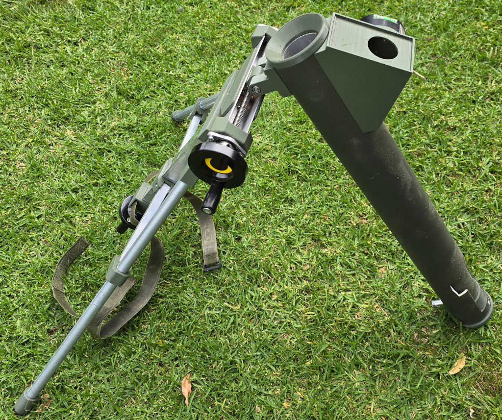
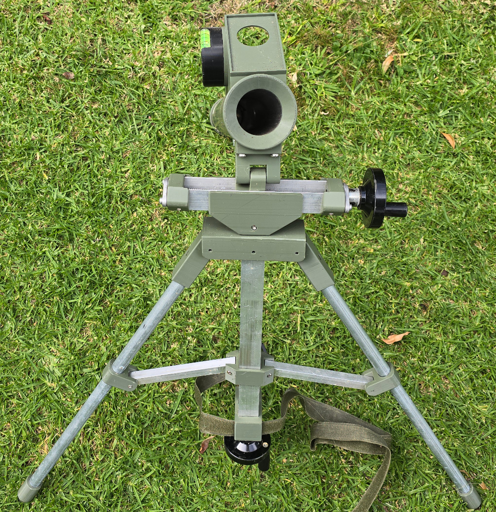
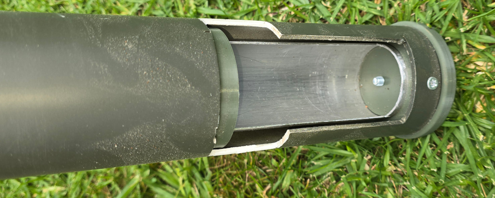
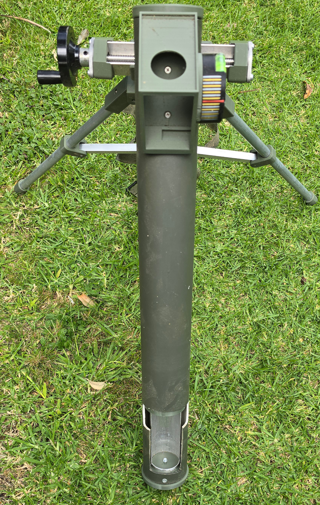

Q-Prop Creations
40mm Mortar
After a lot of experimentation, I have abandonned thi sone. It is great to hang a projectile over the bore of a mortar, then drop it into the bore to fire. Unlike real mortars, airsoft mortars leave a 40mm shell inside the bore, so some sort of removal process is required before firing another round.
Maybe a mortar round containing a CO2 bulb would be a better option.




